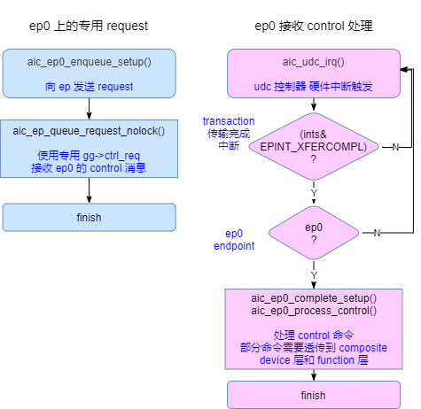

关键流程设计
4 Feb 2024
Read time: 1 minute(s)
初始化流程
DCD 驱动的入口是 platform 驱动，初始化流程先获取 irq、reg、clk、reset 等资源并进行初始化，最后调用 usb_add_gadget_udc() 向系统中注册。
大致的流程如下：
|-->aic_udc_probe()
|-->gg->regs = devm_ioremap_resource(&dev->dev, res);
|-->gg->reset = devm_reset_control_get_optional(gg->dev, "aicudc");
|-->gg->reset_ecc = devm_reset_control_get_optional_shared(gg->dev,"aicudc-ecc");
|-->gg->clks[i] = of_clk_get(gg->dev->of_node, i);
|-->aic_gadget_init(gg);
|-->aic_low_hw_enable()
|-->clk_prepare_enable(gg->clks[i]);
|-->reset_control_deassert(gg->reset);
|-->reset_control_deassert(gg->reset_ecc);
|-->res = platform_get_resource(dev, IORESOURCE_IRQ, 0);
|-->gg->irq = res->start;
|-->usb_add_gadget_udc(gg->dev, &gg->gadget);ep 分配流程

如上图所示，ep 资源的操作分为两部分：
-
ep 资源池初始化。在 udc 驱动初始化的时候同时初始化了 ep 资源池，这样就决定了当前有多少个 ep 资源可用。
-
ep 资源的分配。gadget composite device 可以配置多个 interface 即 gadget function driver，当 function driver 启用时，会从资源池中分配需要的 ep。如果配置的 function driver 过多，就可能会分配失败。
普通 ep 的 request 处理

如上图所示，对于普通 ep 的 reuqest 数据收发分为两步：
-
request enqueue。首先调用 udc 的
.queue()函数，将需要传输的数据插入到硬件控制器对应的 ep 寄存器当中。 -
complete callback。ep 数据收发完成会产生
transfer complete中断，在中断服务程序中调用complete回调函数，结束整个 request 传输。
ep0 的 request 处理

如上图所示，对于 ep0 的 reuqest 数据收发和 普通 ep 基本一样，只是对数据的回调处理稍有不同。